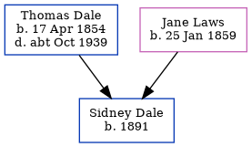

Sidney Robert Dale 1891 -
[ Home ] | [ Calendar ] | [ Surnames Index ] | [ Errors ] | [ Family History ]A cooper cement works and the child of Thomas Dale (a dock yard labourer) and Jane Laws, Sidney Dale, the second cousin three-times-removed on the father's side of Nigel Horne, was born in Strood, Kent, England in 18911.
During his life, he was living on Brompton Lane in Strood on 31 Mar 19011 and on 2 Apr 19112.
Parents
- Thomas Henry was born on 17 Apr 1854
- Jane was born on 25 Jan 1859
Citations
- 1901 England, Wales & Scotland Census - Findmypast (was age 10 and the son of the head of the household)
- 1911 Census for England & Wales - Findmypast (was age 19 and the son of the head of the household)
Family Tree
Map
Generated by ged2site. Last updated on Jul 3, 2024